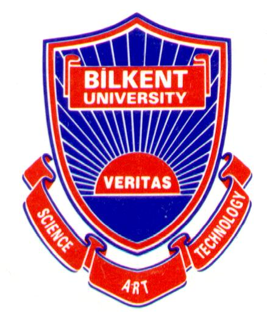

|
|
(Mehmet) Ergun Biçici Post-doctoral Researcher, CNGL Centre for Global Intelligent Content, Dublin City University (DCU) PhD in Computer Engineering, Department of Computer Engineering, Koç University Postal Address: CNGL Centre for Global Intelligent Content Dublin City University Dublin 9 Ireland E-mail: (Work Related) (Others) |
| Publications | Code & Data | Research | Blog | Bookmarks | Photos | Turkish Word of the Day |
|  |